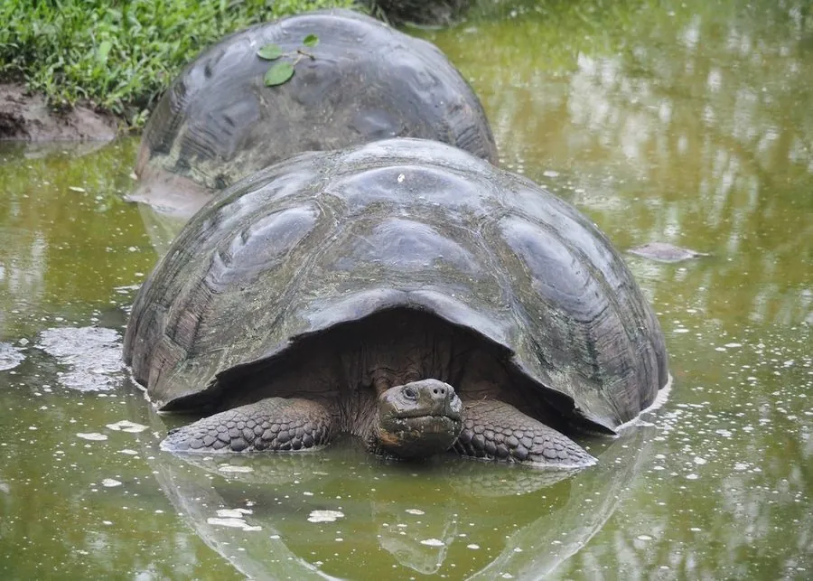

爬行动物 · 动物界
加拉帕戈斯象龟 Chelonoidis niger

世界上体型最大的陆龟，仅分布于加拉帕戈斯群岛，寿命常超过百年，达尔文曾在此获得演化论的启发。
- 分类
- 门脊索动物门纲爬行纲目龟鳖目科陆龟科属南美象龟属
- 栖息环境
- 加拉帕戈斯群岛的草地、灌丛、火山坡地与半干旱低地
- 地理分布
- 厄瓜多尔加拉帕戈斯群岛，不同岛屿分布不同亚种
- 保护级别
- IUCN 极危（CR）；非中国原产；CITES 附录 I
物种志
加拉帕戈斯象龟背甲长可达 1.2–1.5 米，雄性体重可逾 200 千克，是世界上体型最大的陆龟。它的背甲高高隆起如马鞍或圆顶，不同岛屿的种群形态各异：湿润高地多为圆顶甲，干旱低地多为马鞍形甲，后者便于抬头取食高处的仙人掌；四肢粗壮如象腿，颈部皮肤松弛。
它仅生活在厄瓜多尔的加拉帕戈斯群岛，栖息于草地、灌丛和火山坡地，以青草、仙人掌、果实和腐肉为食，清晨沿固定路径寻找水洼，能长时间不饮水。每年旱季过后交配，雌龟在沙地掘洞产卵 2–16 枚，孵化期约 4–8 个月。19 世纪捕鲸船大量捕捉象龟取肉取油，加上外来山羊、老鼠的竞争与捕食，多个亚种灭绝或濒临灭绝；如今各岛开展圈养繁殖和外来种清除，部分种群正在恢复。
形态与习性
- 食性青草、仙人掌、果实，偶尔取食腐肉
- 体长背甲长 1.2–1.5 m
- 体重雄性可达 200 kg 以上
- 寿命常在 100 年以上，圈养记录约 175 年
- 繁殖卵生，每窝 2–16 枚，孵化期约 4–8 个月
- 活动节律昼行性，晨昏活动较多
- 威胁外来山羊与老鼠竞争食物、捕食幼龟
趣味知识
- 不同岛屿的象龟背甲形状不同，达尔文曾据此思考物种的演化。
- 象龟能靠体内储存的水分存活数月，还会舔食露水补充水分。
- 为纪念著名个体“孤独乔治”，其所属亚种已随它的死亡宣告灭绝。